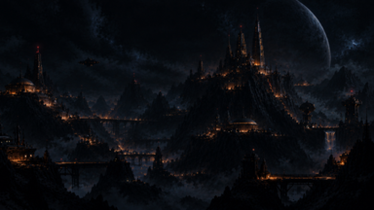
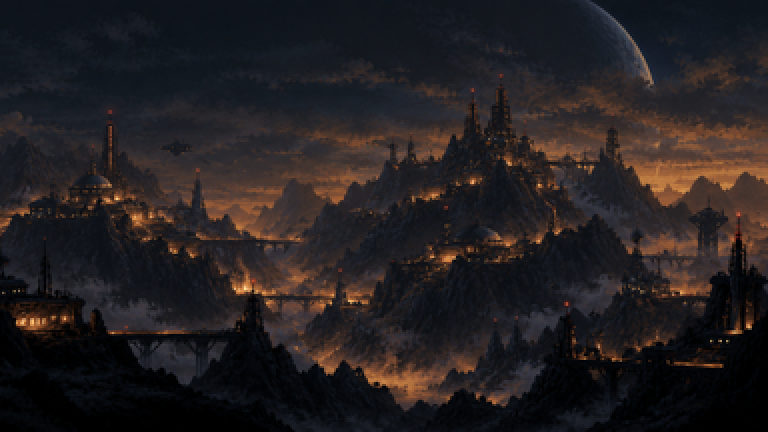
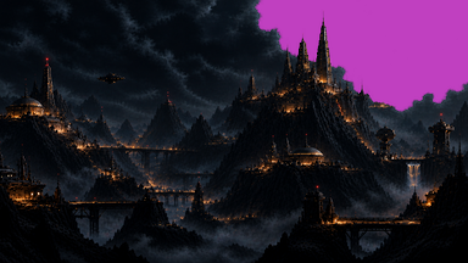
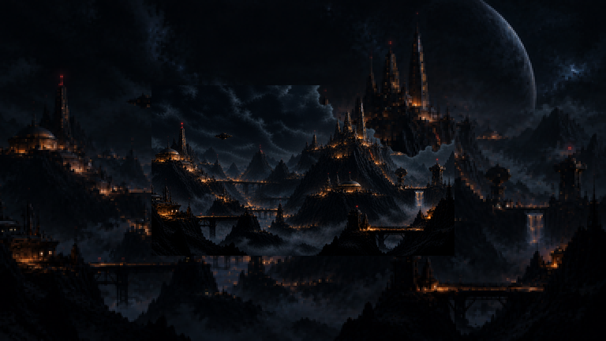
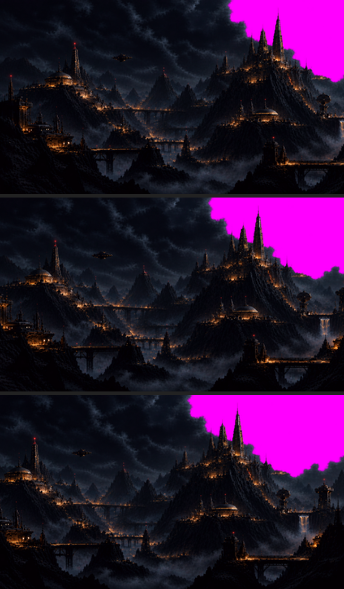
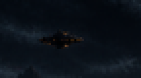
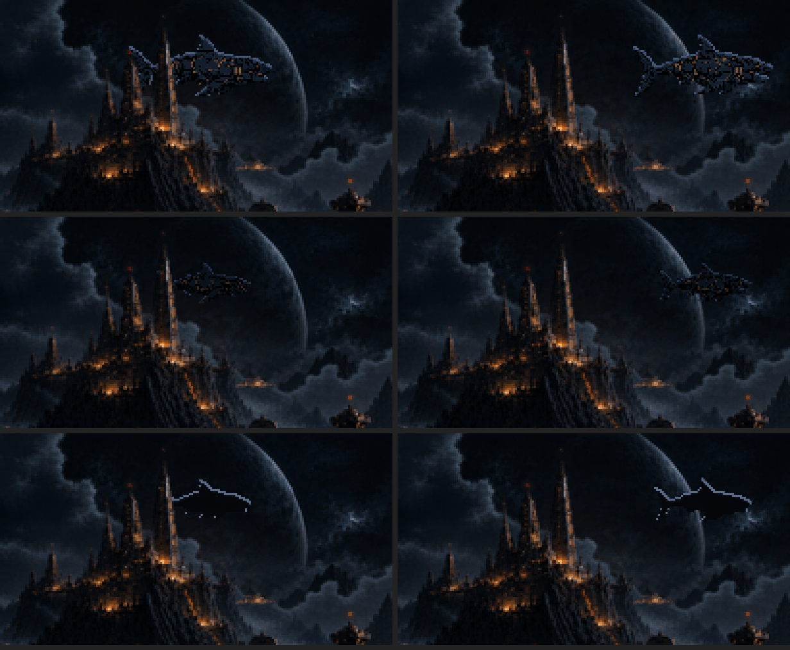
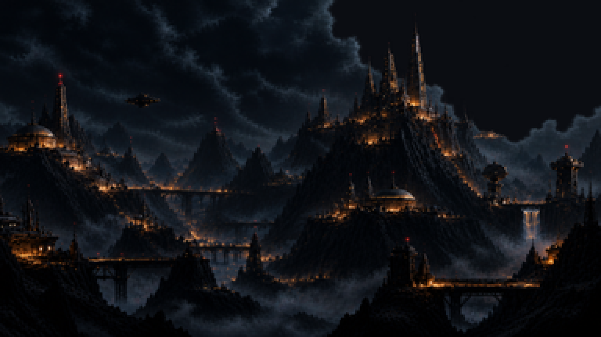
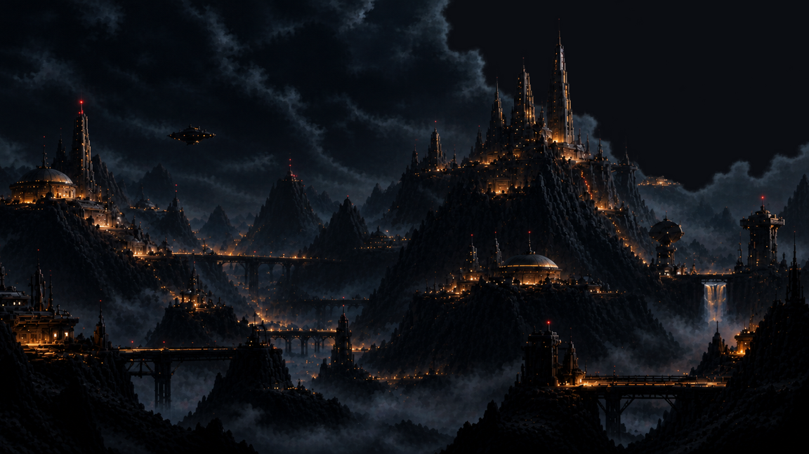
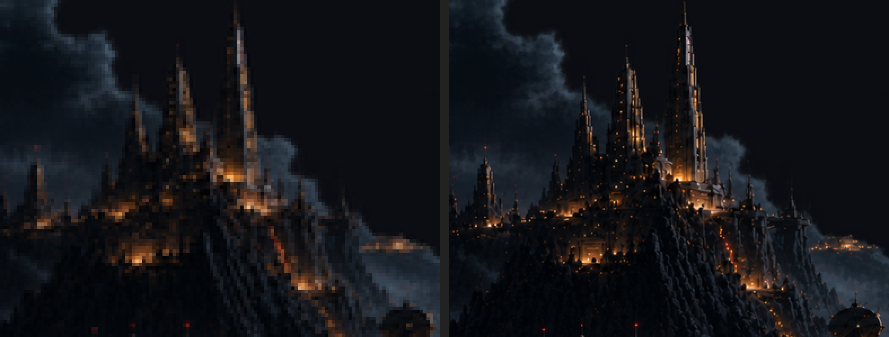

Bloco E · a sua pintura · rodada 1
19/10/2026. ← a abertura · As três imagens no tamanho do jogo, o que eu conferi, e uma maquete rodando dentro do jogo.
As três, no tamanho do jogo
Reduzidas de 1768×890 para 384×216 (a tela do jogo) e ampliadas ×2 aqui, com o corte recomendado abaixo.



As duas camadas juntas recomendo

O que eu conferi
- o corte A imagem é mais larga que a tela (2:1, a tela é 16:9). Na altura do jogo ela fica com 429 px de largura, e 45 px precisam sair, porque ampliar não pode. Recomendo cortar da esquerda (a terceira faixa abaixo): a janela do céu fica maior, e a cidadela cai no terço direito. Perde-se a torre da ponta esquerda.
- a nave pintada O disco voador no céu fica parado (lê como congelado) e cai bem atrás do "ARQUIVO DE CARTAS". Nave é camada viva, como combinamos. Recomendo apagar da pintura. Se quiser uma nave, eu ponho uma cruzando devagar, de verdade.
- eu resolvo No arquivo transparente, a cidade inteira está a 99% de opacidade (não 100%): o céu de trás vazaria de leve por ela. E um farol vermelho da versão fria aparece pela janela, ao lado da agulha. Os dois são correções minhas, sem trabalho para você.
- confere A colônia do capítulo 5 é um bairro de cúpulas numa planície; aqui é a cidade inteira, e as cúpulas também estão nela. Lê como o mesmo lugar: o Leviatã cai num bairro da borda.
- depois A pintura ainda está crua. O tratamento da Atmosfera (névoa, cor, grão) entra quando a composição fechar.


A maquete no jogo escolha
Montada dentro do jogo, com o texto de verdade: o título e a lista no céu, à esquerda, e as conduções embaixo. O Leviatã sai de trás das nuvens, passa atrás das agulhas e cruza na frente do planeta. Testei três tratamentos para ele, todos em velocidade real (16 s):



para decidir agora O tratamento do Leviatã no menu: A, B ou C.
Se você não disser nada sobre o resto, sigo com o que recomendei: o recorte com o céu frio atrás, o corte tirando da esquerda e a nave apagada da pintura.
Rodada 2 · a pintura "no tamanho dela" confirme
A sua escolha: B, ainda menor; a pintura com o tratamento das fases; vida nas luzes âmbar, na cachoeira e na nave, que fica, pairando. Antes de montar, a resolução, porque ela muda o resto.
A tela do jogo tem 384×216 pixels, ampliados ×3. A pintura das fases é reduzida uma vez, do original direto para 384×216 (a sua regra de 06/09: assada no tamanho do jogo, nunca ampliada). A alternativa seria desenhar a pintura na camada HD, a do texto, com 3× mais pixels.



recomendo A resolução do jogo.
- É o que faz a pintura ler como o resto do jogo. A versão HD lê como imagem gerada, o defeito que você apontou na F1 (bloco G).
- O Leviatã, a nave, a cachoeira e as luzes ficam na mesma grade de pixel da pintura.
- A camada HD fica por cima do jogo (ela foi feita para o texto). A pintura lá levaria o menu inteiro junto, e a Atmosfera teria de ser refeita para ela.
- O detalhe que some nas janelas volta como luz: o halo da Atmosfera faz as luzes quentes brilharem e respirarem, e os efeitos piscam por cima.